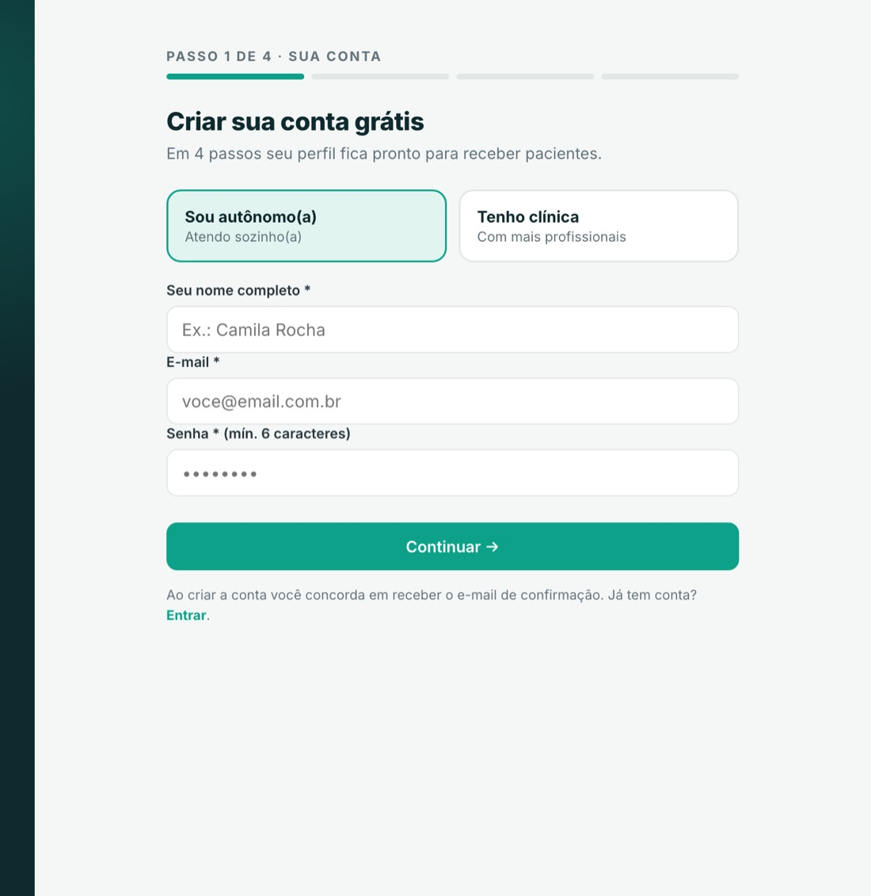
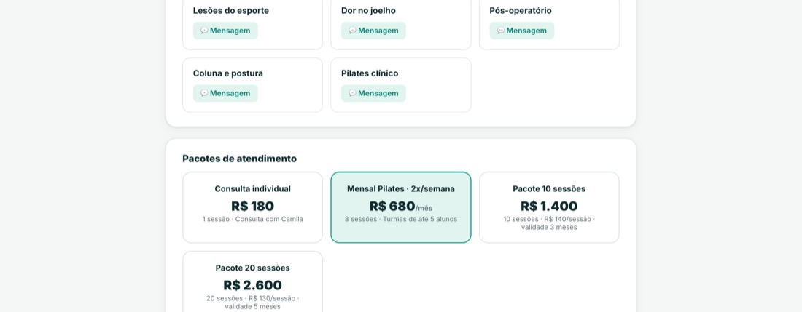
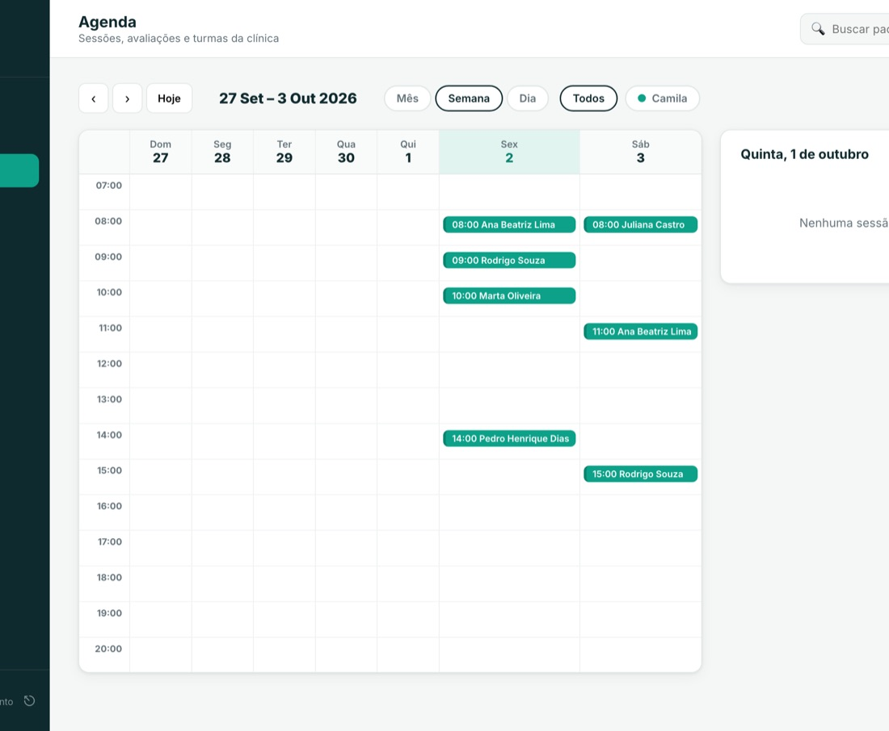

A conversa sobre site com fisioterapeuta quase sempre trava no mesmo ponto: pedir orçamento, escolher quem vai fazer, juntar textos e fotos, revisar, esperar. Meses depois, muita gente desiste no meio — e quem termina costuma ficar com uma página bonita que nunca marcou uma consulta.
O caminho prático é outro: em vez de um site do zero, publicar uma página profissional pronta para agendar, com seu nome, seu CREFITO, suas especialidades e sua agenda. É disso que este passo a passo trata. Se você ainda está decidindo se precisa de um site, vale ler antes “você é fisioterapeuta e precisa de um site profissional?”.
O que você precisa ter em mãos
Separe isso antes de começar — leva mais tempo procurar do que preencher:
- Seu CREFITO, do jeito que está na carteirinha.
- Cidade e bairro onde você atende, e se você vai a domicílio.
- Valor da consulta (dá para mudar depois, mas é o que mais tira dúvida do paciente).
- Uma foto sua — de rosto, com boa luz. Serve uma foto de celular.
- Duas ou três frases sobre quem você atende e como trabalha.
Passo 1 · Criar a conta
Abra perfisio.com.br/cadastro e diga se você atende sozinho(a) ou tem uma clínica com mais profissionais. Dá para entrar com sua conta Google ou com e-mail e senha. A conta nasce aqui: se o telefone tocar no meio do caminho, você volta depois e continua de onde parou.

Passo 2 · Seus dados profissionais
Aqui entram o CREFITO, a especialidade principal, o WhatsApp e as especialidades que aparecem no seu perfil. O CREFITO vira um selo visível na página: é o que separa, para o paciente, um profissional de um anúncio qualquer.
Passo 3 · Onde você atende
Estado, cidade e bairro. Essa informação faz duas coisas: coloca você na listagem da sua cidade dentro
do PerFisio e monta o endereço da sua página, no formato
perfisio.com.br/fisioterapeuta-sua-cidade/seu-nome. Quem procura fisioterapia costuma
buscar pela cidade, e é esse endereço que conversa com essa busca — tema do artigo
como aparecer no Google como fisioterapeuta.
Passo 4 · Seu link, sua foto e sua apresentação
No último passo você envia a foto, escreve a apresentação e escolhe seu link curto, no formato
perfis.io/seu-nome. É o link que cabe na bio do Instagram e que você manda no WhatsApp
quando alguém pede indicação. Se mudar de ideia depois, o endereço antigo continua levando ao perfil —
cartão e cartaz já impressos não quebram.
Pronto: é isto que o paciente vê
Terminado o cadastro, sua página já está no ar, com foto, CREFITO verificado, especialidades, região de atendimento, preço e botão de agendar.

O paciente escolhe o dia e o horário na própria página, sem ligação e sem troca de mensagens. O agendamento cai direto na sua agenda, com o nome dele já cadastrado.

O que fazer na primeira semana
- Troque o link da bio do Instagram pelo seu link curto e fixe um story destacado com ele.
- Coloque o link na sua mensagem automática do WhatsApp Business, antes do “oi, tudo bem?”.
- Imprima o cartaz com QR code (o PerFisio gera) e deixe na recepção, para o paciente avaliar seu atendimento. Avaliação de quem já tratou com você vale mais do que qualquer texto de propaganda.
- Peça para dois ou três pacientes antigos agendarem o retorno pela página. É o teste real do fluxo — e você já começa com a agenda rodando por ali.
E se eu já tiver um site?
Não precisa derrubar nada. Dá para manter o site atual como vitrine e usar a página do PerFisio como o lugar que agenda: basta apontar o botão “agendar” do seu site para o seu link curto. Você passa a ter agenda, prontuário e financeiro ligados ao mesmo lugar onde o paciente marca.